为什么拆解这本书？
《峰值体验》，作者汪志谦，252页，6到7小时读完，我认为是每一个创业者和管理者的必修课。所有体验设计书籍里最能落地的，不是只设计一些看似不错的体验，而是能转化的、直接跟销量挂钩的关键体验该如何设计。
预热思考题
【背景】有一家云南菜餐厅，老板说他的餐厅有四大特色：
- 云南厨师：餐厅只用云南厨师，饭菜是地道的云南味；
- 云南服务员：服务员是云南本地人，呈现云南人文风情；
- 云南食材：所有食材从云南直接运来，食材原汁原味；
- 云南姑娘跳舞：餐厅门口有美丽的云南姑娘跳舞。
【现状】因为餐厅进店率没有达到预期，就不断地增加服务，千里迢迢把厨师、服务员、跳舞姑娘从云南带来上海，管吃管住还要培训。
【提问】如果考虑撤换1个最不重要的点，你认为是哪个？如何进行思考？
引入关键概念：峰值体验
过山车的故事
生活中我们时常会碰到一种情况，陪孩子或家人在游乐园坐过山车往往需要排队，而且很可能是一到两个小时的漫长时光，但最终玩儿的时间只不过一两分钟。然而在这个过程中，我们大都只会对从顶端往下俯冲的刺激以及最终结束时产生的兴奋感记忆犹新，至于之前排队的事情可能早就抛之脑后。
我们对一项事物的体验，能记住的就是在峰值“最高”与“最后”的体验，这些体验的时间长短、质量、比重，对记忆几乎没有影响。高峰之后，终点出现得越迅速，这件事留给我们的印象越深刻。这里的“峰”与“终”，就是“关键时刻”。
行为经济学家丹尼尔•卡尼曼是2002年诺贝尔经济学奖得主，他的著作 《思考，快与慢》 认为，人类对体验的记忆由两个因素决定：高峰时（无论是正向的还是负向的） 与结束时的感觉，这就是峰终定律(Peak-End Rule)
如何利用“峰终定律”来找到影响用户决策的“关键时刻”，创造峰值体验并影响他们的购买行为和消费决策，进而帮助公司提升业绩。
一个小故事：和一起朋友去买衣服
有一次朋友和我一起去买衣服，进了店客人还挺多的，一个年轻的导购一直陪着拿衣服、试穿、换尺码，试了50分钟选了五六件，本来要买单了，朋友讲了一句：“我觉得爱马仕比较适合你。”我说：“是吗？要不然先去看一下？
可能是试了半天最后又犹豫了，旁边的导购小声地发牢骚：“要去看爱马仕不早点儿去，浪费我一个多小时，旁边还有一堆客人没照顾到呢。”
朋友听了很不高兴，瞪了导购一眼，拉起我头也不回就往外走。
难为这位导购前面献了一个小时的殷勤，忙活了半天，又拿衣服又倒茶水，只因为最后一刻说了句不该说的话，所有服务通通被一笔勾销。品牌百般好也没用，我们只记得她说的那句话。
这个故事充分地验证了丹尼尔：卡尼曼的“峰终定律”。
峰终定律告诉我们，消费者对某次体验的整体评价，只会来自最满意、最不满意的感受，或者终场感受。
【误区】企业应该避免掉进“整体服务的提升”的误区。消费者本来就不在乎流程，你去优化流程干什么？整体服务的提升架构庞大，细节复杂，更加难以快速迭代。“没法迭代”在现今商业环境下绝不是一个好的竞争策略。
【解读】少即是多，敢以少少许，胜人多多许。
套用一句话：服务的流程很长，但关键处只有几步！
【启发】 不要整体提升，要峰值。
体验设计的常见几个误区
误区1：从自身的角度（自嗨）去做体验设计。
消费者视角与企业不同，从自身的角度（自嗨）去做体验设计，这是企业最常犯的错误。
不同的消费者重视的关键时刻不同，一个没有针对性的体验设计，很难产生峰值。企业要先确立目标用户才能去做体验设计，而不是拍脑门做事。
误区2：只做体验设计，没有考虑商业价值。
关键时刻与传统触点思维不同，建议以消费者四大决策点“进店、转化、复购、推荐”为基点进行构思，以维度思维挖出关键时刻，再进行体验设计。
如果仅仅用消费者洞察来进行体验设计的落地，有可能做出的体验设计并不具有任何商业价值。
误区3：全面提升服务体验，在优化点上均匀用力。
很多公司总是会高喊：“全面改善！整体提升！不放过任何一个细节！”
“对不起，你做不到”，因为我们手里的资源永远是有限的，整体提升，我们付不起那个成本。
误区4：做了体验设计，但是无法落地，无法量化，无法迭代。
如果你做出一个体验设计，想着一次就做好。应该是更快速地改善、迭代，不断地修正，才会让你的消费者感受到峰值体验。应该问自己“我迭代的速度够快吗？”
误区5：做体验设计，没有考虑品牌。
品牌要攻占的是消费者的心智，一个好的体验设计，要能在消费者的心中留下标签。如果他接触你的品牌之后心智没有发生任何改变，这个体验设计就是不到位的。
体验设计五步法
关于体验设计
- 相关概念：“定位”“关键时刻〞“体验设计”“行为经济学”“品牌营销”
- 体验设计=洞察+落地。
- 真正的体验设计，是做取舍。
- 做体验设计需要“打破刻板印象”，利用“新旧、古今、跨界、中西”，反差交错产生惊喜。
- 要做体验设计，必须从行为经济学的角度去理解人做决策的系统，五感与直觉时时刻刻影响着消费者的决策。
- 做体验设计，就是让用户做决策事，不纠结。
书中定义
挖出关键时刻，并在那个时刻让用户体会到品牌信息，并影响消费者的决策，完成公司目标。
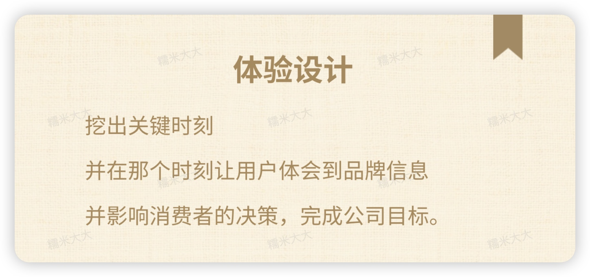
从洞察到落地，书中详尽地为我们剖析了有关如何打造峰值体验的方法论。
体验设计五步法
用户，目标，关键时刻，体验落地，品牌
这五步分别对应上面的五个误区
一、用户
你必了解的三种人“爱你的人、不爱你的人、喜欢你的人”，这三种人非常重要，了解他们，会做洞察。
-
爱你的用户（铁粉） 挖掘他们身上真正爱你的原因，找到他们之间的共性。
-
不爱你的用户（黑粉） 为什么讨厌你，他们喜欢的产品有什么特点，有什么特别的价值，利用对手的优势来审视自己的不足。
-
佛系用户（中立者） 他们往往对所有的产品都一样，没有很强的目的性和倾向性，而是跟随自己的内心进行选择，这就要求我们仔细分析，他们第一次是因为什么而了解到自己的产品，第一次购买是因为什么原因。
二、目标
你的真正目标，才是一切优先级的决定因素。
拆解门店业务
进店率，转化率，复购率，推荐率
拆解门店业务目标：“进店率”“转化率”“复购率”“推荐率”
汪老师用“一见就进、一进就买、一买再买、一传千里”来形容一个完整且成功的品牌营销流程，这背后其实就是商业运营非常关注的进店率、转化率、复购率和推荐率的问题。
【划重点】 每个环节都有MOT（关键时刻），都能影响到用户的决策，而企业要做的就是了解“爱你的人、不爱你的人和喜欢你的人”，进而找到MOT，从核心用户圈层（BTA）出发打透打穿，即“以1厘米的直径打到1万米的深度”，最终影响更多的目标受众，完成一整套营销流程。
复购率的核心
就是找到消费者什么时刻觉得“值了”。
消费者会一买再买，就是因为他觉得“值了”，再次购买的时候，他一定期待得到一样的峰值体验，对吧？你每次买茶饮，最重要的时刻就是用吸管吸第一口的那个刹那，感觉很爽，你就觉得值了。关键是，每次都得这样，你才会每次都买，每次都很值。
其实复购这个时刻最考验企业了。但只要你持续让消费者感觉到“值了”，消费者的心智就会出现“这家企业就是某某品质的保证”，他就会一直买，你出什么东西，他都会买。这个时候，“信任”这个词就已经进入消费者的心智中，所以，复购最终就是要让消费者忠于习惯。
如何让消费者忠于习惯，提高产品或服务复购率？有三句话送给你。
平凡变极致
低谷变峰值
梦想变真实
可能听着觉得还有点抽象，用一个具体的案例说明。
案例：上海豫园里的老庙黄金
问题：虽然豫园的人流很多，但是当初进这家店的人并不多。
策略1：设计了金砖阵和黄金楼，让消费者注意到这个区域，注意到这栋建筑，提升进店率。
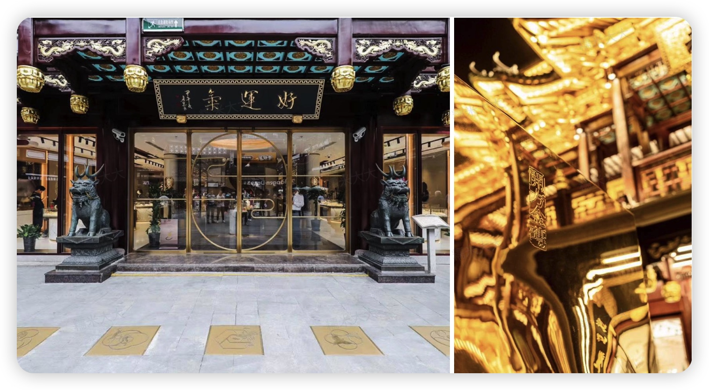
好，那只有进店当然不够，老庙黄金还有问题：这是一个三层楼的建筑物，消费者就算进店了，上楼的人也不多。经常发生的情况是消费者在一楼逛了一圈就出去了，没有打卡，也没有拍照。那我们是怎样用体验设计来改变这种状况的呢？
“老庙给你带来好运气”，这个slogan老庙黄金已经用了60年了，但消费者没有体会到。
如何让消费者感受到好运气？那我们中国人一说到“好运”是指哪些？福、禄、寿、喜、财，对不对？这就是把消费者脑中所想的挖出来。
策略2：设计了这五道好运门，分别布置在不同的楼层，目的就是让消费者进了楼以后会去打卡。
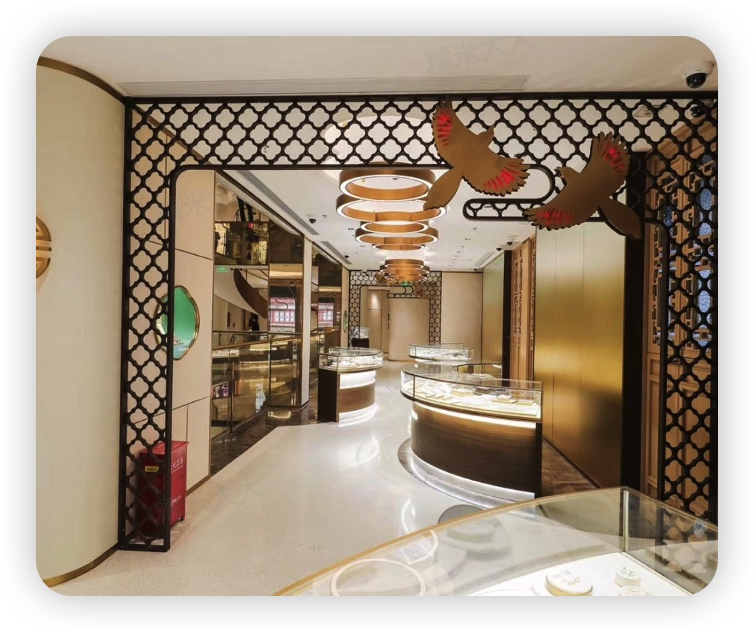
策略3：设计了一棵黄金树
把整栋楼中间挖空，做了一棵黄金树。这棵黄金树的设计非常酷，不是一般无趣的造型。
黄金树下面有两只大象，为什么要用象？因为豫园的“豫”字里有“象”。你站在每一层楼去看这棵黄金树，它都不一样，非常漂亮。
为什么要设计一棵树？首先，发财树，还是和好运有关。其次，消费者从一楼大门走进来看到这棵树，立马就会想走上三楼，从最高处往下看看它完整的样子，然后拍下来，分享朋友圈。
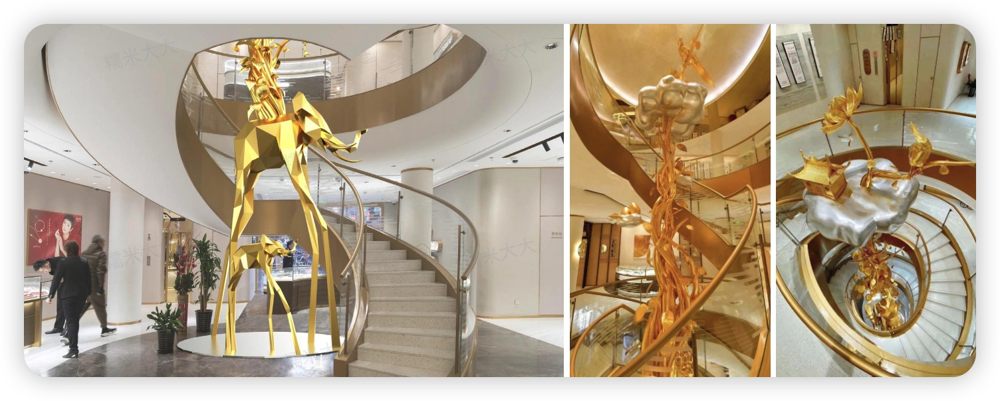
再接下来，就是具体商品的设计。
策略4：根据金砖、金楼、金树这些造型，把好运的寓意做了延伸，设计了很多黄金饰品，你可以看看这些图，比如吊坠、手链等等，都非常好看，都是跟好运有关的样式。
消费者就把好运带回家，增加转化率的同时，消费者更可以跟家人朋友去分享推荐。
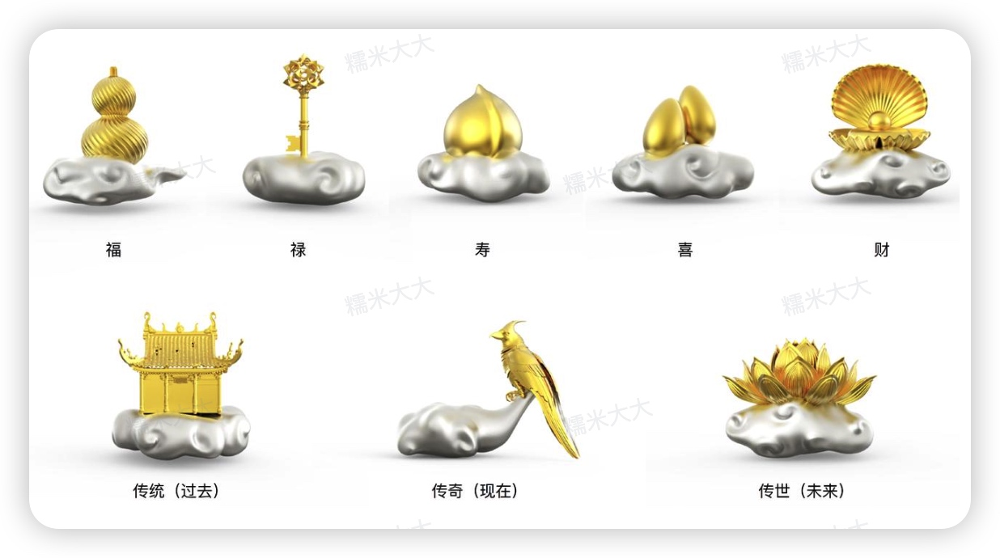
三、关键时刻(MOT)
MOT背后的价值观：懂得取舍
是谁、在什么状况下、感受到什么
-
MOT的定义三元素~“是谁、在什么状况下、感受到什么”
-
所谓消费者洞察，就是找到影响消费者“一见就进、一进就买、一买再买、一传千里”的关键时刻。
-
两种挖掘MOT(关键时刻)的方法
- 第一种方法，从信息中挖掘MOT。先问消费者怎么形容这个品牌，再问他为什么他的感觉是这样，这个“为什么”就是MOT。
- 第二种方法是“三种人，四维度，28个洞察点，运用焦点小组座谈会挖出MOT。
-
选择MOT的9个原则：
- 原则1：不同的用户，MOT重要性不同。
- 原则2：企业目前侧重哪一个关键指标？
- 原则3：是三个黄金时刻吗？（最高、最终、最初）
- 原则4：消费者能不能在这个MOT感受到信息？
- 原则5：我的美能被放大吗？MOT能被打造成峰值吗？
- 原则6：哪一个MOT消费者最重视？
- 原则7：哪一个MOT我可以做得最好？
- 原则8：哪一个MOT竞争对手做得不够好？
- 原则9：商业模式可不可以适配？
再来分享一个案例：如何让一个年营业额300亿的公司，做对十件事，净利成长十倍，赚到25亿。
背景：
华航一家台湾知名的航空公司，成立60年，一直有一群很忠诚的乘客，只是这些热爱华航的人，多年来慢慢地都变老了，空姐老了，飞机也旧了。在很多人的认知中，华航是一个老品牌，新生代的乘客都去坐竞争对手的飞机了。但问题不只是这些，华航还面临一个问题，它的商务舱乘坐的人不多。
华航为了改善这一点，花了非常多的钱，买了10架波音777-300ER的新飞机，这是双通道的大飞机，座椅很舒适，可以平躺。
我们再来看另外一点，坐飞机一定会想到的就是舒适度很重要，那这个“舒适度”是不是MOT呢？
问题：要怎样增加商务舱的载客率才能让利润得到提升？光凭直觉我们也知道，商务舱和经济舱的消费者要的东西不一样。
- 比如认为座位空间"”，商务舱的乘客需要比较大的座位空间，所以华航购买了大飞机。
- 很多人可能会说“服务”，他们认为商务舱的乘客更重视服务。
- 极高成本，提升商务舱的餐饮质量。
但是实际真的如此吗？
作者团队做了哪些工作：
- 定义了300个基础的关键时刻：跟华航的精英团队一起研究，针对商务舱乘客挖掘了很多关键时刻，从行程规划、购买机票、报到、贵宾室、候机、登机、空服人员、餐饮、设备、里程酬宾计划等方面。
- 浓缩出80多个关键时刻：非常多的FGD（焦点团体座谈），还做了3000份量化的问卷，研究了行业内第三方的调查评比、媒体简报和舆情、华航内部的客户满意度调查。
- 最后筛选出不到10个：真正对消费者决策产生重大影响的，不到10个。
- 第一名的关键时刻：“睡觉”
- 洞察：因为在飞机上，你做的时间最长的事情就是睡觉。没有睡好，你就会非常容易产生低谷。愿意花很多钱坐商务舱的人，工作都很繁忙，一下飞机就要马上投入工作。如果他没有睡好，对他来讲是非常糟糕的事情，会马上变成低谷，他一定会记得。
- 一个新的床单、一个新的被子和枕头、都是白鹅绒的，知名厂商合作的最新款的限量款梳洗包。
- 华航有一个铺床的服务，是这样子的，这个座椅可以180度平躺。
- 第二名的关键时刻：“上餐”
- 空服人员“上餐”这个关键时刻会让他们产生反应。空服人员动作优雅、餐具、摆盘、食材、颜色、用料材质等等，是能让人感觉高档的关键时刻。
- 令人耳目一新的餐具，包括宋代葵口盘、元代高足碗、清代青花瓷融和科技感的山水碗等等，重点是上餐时呈现的视觉好像一幅画，见多识广的商务舱乘客看到上餐仪式有新花样会纷纷拍照，这样做带来的裂变超高。
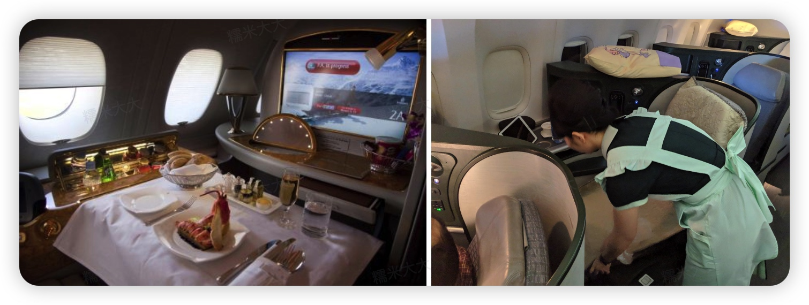
在华航的案例中，从300个时刻，最后减到不到10个重大影响消费者决策的关键时刻。所以，千万别再说“整体服务提升”，要做的是在关键时刻打造峰值体验，让信息进入消费者的心智，并产生有商业价值的行为。
对于华航来说，不只是找到那十件事，还要把它变成峰值。还有290件事不用再做了，帮它省了非常多的钱。
所以接下来，关键时刻（MOT）到底如何写呢？
MOT的定义、写法及原则
- 该怎样写出一个正确的MOT呢？定义、写法及原则。
- MOT三元素
- “是谁”：简单描述一下目标用户。
- “在什么状况下”：这个时刻越短越好，越精确越好。包括在哪，消费者看到什么，听到什么以及做了什么，等等，提供的具体细节越多越好。
- “感受到什么”：消费者在那个时刻感受到“什么”。这就是消费者对你的品牌信息给出的心智标签。
如果以前文提过的那个云南菜餐厅为例，它的MOT写法：
一对带着5岁幼童的年轻夫妻，周末去逛百货商场，中午逛累了想找地方吃饭，孩子看到餐厅前有云南姑娘跳舞被吸引过去，他们感受到这是一家有云南风情的亲子餐厅，感觉新鲜就在这儿吃吧。
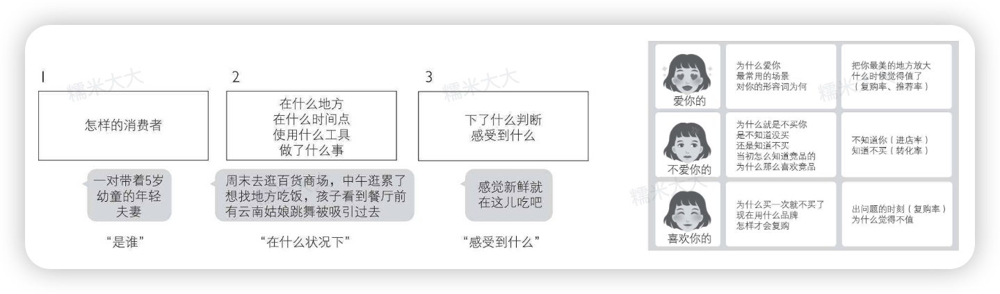
撰写MOT的十大原则
- 在写MOT时建议使用便利贴，因为之后需要和大家一起讨论。
- 一张便利贴只写一个MOT，讨论的时候才能整合。
- 每个MOT必须包含 “是谁”“在什么状况下”“感受到什么” 这三个元素。
- 一个完整的MOT撰写字数至少40字。
- 一个MOT的时长最好在3分钟以内。如果太长，就必须细化，就是把这个MOT再切割成更小的时间单位。MOT细化程度越高，越有着力点，越容易产生峰值。很多有意义的MOT只有10～30秒。
- 写MOT，不要写成MOTX。我们在写MOT的时候，先把时刻写清楚，而不要写那个时刻要做的事的细节。不然的话，我们会花很多时间讨论创意，而忽略确定时刻的重要性。比如，你只需要写有姑娘在餐厅门口跳舞，至于姑娘跳什么舞穿什么衣服，在写MOT时还用不到这些细节，等到进入MOTX设计时，我们再来好好规划。
- 在确认MOT之后，再设计那个时刻具体要做什么事情。到了“落地”篇，我们会提供多种方法让你好好地思考创意。在每次带领工作团队时，我最常见到的撰写错误就是，在写MOT时大家将其写成了不该带有那么多细节的MOTX，而当真正要写MOTX时，大家又写成了MOT，反反复复走不出来，没有设计好真正的思路。
- 在写MOT时不要忘了第三个元素“感受到什么”。其实消费者在那个时刻感受到什么非常重要，我们打算在这个MOT里落地什么信息呢？当你设计出一两个或三个MOTX，并且它们不断地让消费者感受到一致的信息时，这个信息就会进入消费者的心智，消费者就会为你的产品贴上标签。因此干万注意好好思考消费者“感受到什么”这个元素。
- 在写MOT时，可以根据不同的TA，尽量多写，越多越好。在这个阶段不要排除MOT。
- 透过市场调查去挖掘MOT，常用的做法包括一对一访谈、问卷调查、街边访谈、焦点小组座谈、卖场录像动线分析、货架陈列RFID(射频识别）分析、神秘顾客拜访等等，只要是能客观获取市场情报的研究工具，就是可用的方法。
四、体验落地 （MOTX)
MOTX，就是关键体验，尽可能是峰值体验。
体验落地（MOTX)
升维设计，降维落地
某羊奶品牌的案例
我儿子在4个月大的时候，突然开始便秘，身上长满了湿疹，我什么办法都试过了，什么益生菌都给他 吃过了。去医院看了起码一个多月，那些医生只会不停地叫我换奶粉。我每天不停地帮他喷含有激素的药液，真的很恐怖。
后来那个主任跟我说要不再换个奶粉试试，然后给我一个地址叫我去那里买，是达人的氨基酸奶粉，很贵，一罐800克就要700多元。我觉得贵也无所谓，只要孩子不那么痛苦。
那天我买了3罐，其实氨基酸奶粉就是一种治疗的药物，要长期用，不是说立刻就能见效的。他才四五个月大，那个奶粉很苦、味道很难闻，每次喂他我都会加糖进去，但是他一整天都不吃。后来有一天在母婴店，本来准备买了一罐氨基酸奶粉。那个卖羊奶的导购叫我试一下羊奶，我就说我儿子过敏，不能乱吃，我还给她看孩子的照片，她说过敏太严重了，她有个朋友的孩子也是这样，她叫我买一罐小的、精装的，先试一下。我买回去，我儿子喝了3天湿疹全没了。
你以为只有这位妈妈是这样讲的吗？不是。通过访谈了一群妈妈，超过80%买品牌羊奶粉的妈妈都说过类似的故事。发现，这个转化过程完全是一个“套路"。
- 这些妈妈并非一开始就给孩子喂羊奶粉。关键时刻是孩子对牛奶粉过敏，才转成羊奶粉的。
- 这些妈妈是如何知道羊奶品牌的？她们很多人都是去母婴店时受到品牌商派到那里的导购的影响。
- 母婴店导购常常是这些焦虑的妈妈咨询的对象，某羊奶品牌成功地破解了这个MOT，在这一点上下了很多功夫，这就是它的套路。
- 小罐装很重要，在转化率这个维度上，它成功地降低了购买门槛。
- 精装也很重要，消费者购买商品时，常常看外包装判断商品的优劣，这是标准的感性思维。
- 导购的话术更重要，导购跟妈妈的对话是关键时刻，之前很多购买羊奶粉品牌的妈妈根本没听过这个品牌。
- 很多使用羊奶粉品牌的妈妈都从品牌的“使用者”变成品牌的超级“传播者”，分享的时候都超激动，超兴奋，因为自己的孩子不再过敏了。
撰写MOTX的格式
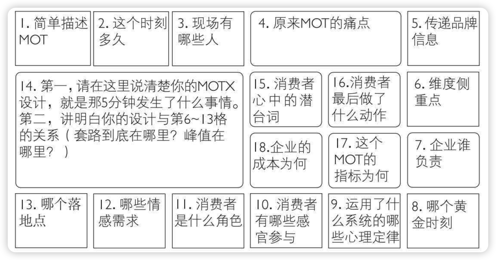
五、品牌
一说到“品牌提升”，大部分人想到的、在做的，就是每个环节都不能落下。产品设计、客户服务、营销运营、售后跟踪等等，每一项都要做好，否则，提升、增长，都不可能实现。
但这是一个巨大的陷阱。
定义：心智标签就是你的品牌信息
品牌信息的四大思维
一原则、三个圈、四维度三信息、多维信息
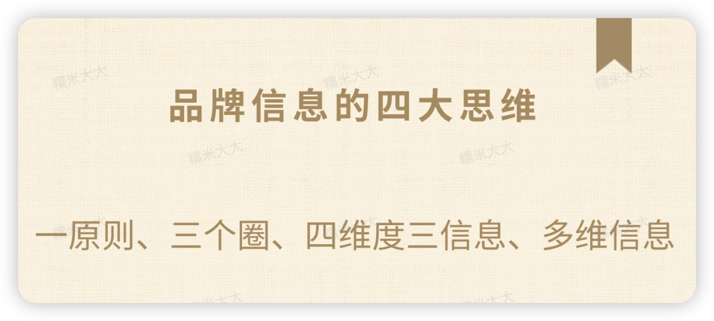
品牌信息的四大思维，即一原则、三个圈、四维度三信息、多维信息。
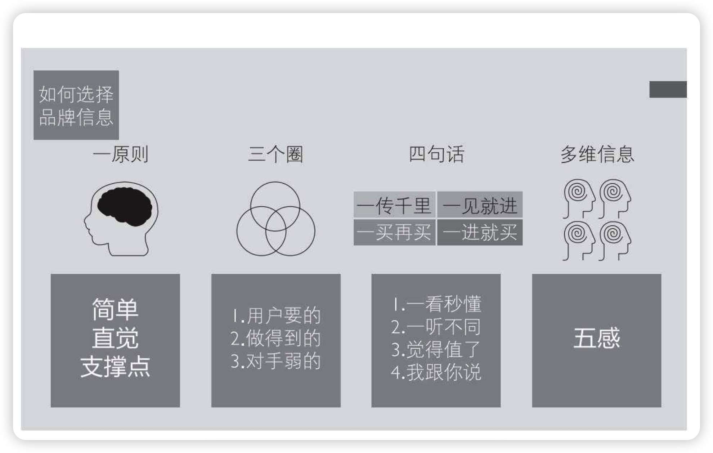
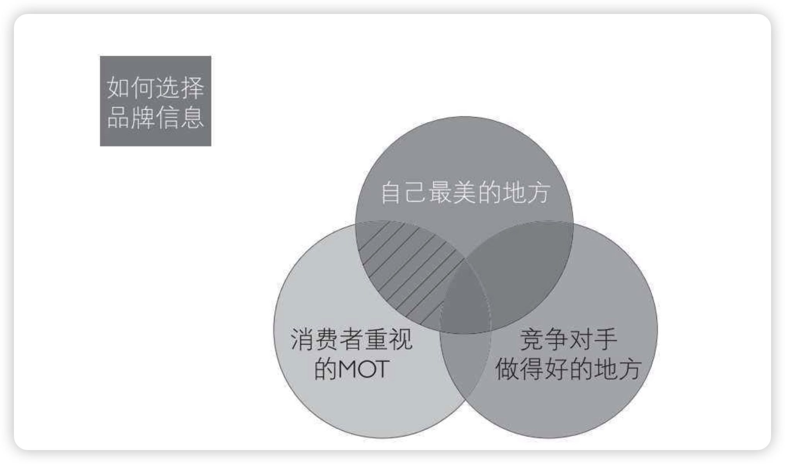
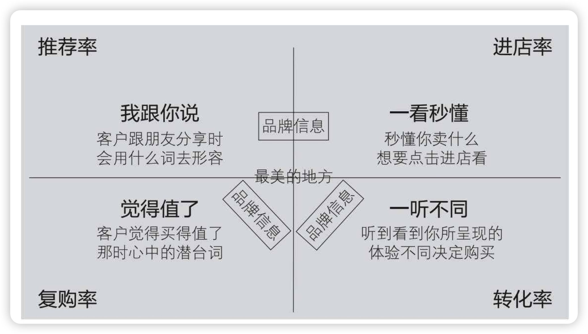
- 一原则：简单直觉与MOT支撑
- 三个圈
- 消费者要的，就是消费者有感觉的信息。
- 你能做得到的，你的MOT能产生峰值，能让信息进入消费者的心智。
- 竞争对手做得好的地方，标签已经被对手拿走了，你就不要再花时间去做了。
- 四维度
- “进店” 的信息一一“一看就进，一听秒懂”
- “转化” 的信息一一“我要不同，我信你了”
- “复购” 的信息一一觉得值了
- 变成“推荐” 的信息
- 多维信息：能调动越多感官一起参与的体验，峰值越高。
- 五感印记才是营销上的超强必杀技，眼耳鼻舌身，温度湿度光线明暗，都要综合规划。系统1的威力无处不在，让消费者“一看秒懂、一听不同，觉得值了，我跟你说”，这才是有效的品牌信息设计。
【划重点】一个没有印记、没有故事的品牌根本就无法传播
促使消费者推荐的套路：
- 我是谁？消费者是透过你的产品告诉别人“我是谁”。
- 他是谁？这里的“他”指的是真正传播力度大的消费者。他是KOL，他是KOC。
- 你是谁？让消费者记住你的故事。
升华
体验设计的关键即抓住关键时刻
任何事情，很难做得全面，也没必要做得全面和完美，因为认知和精力毕竟有限。要找到影响事情进步、发展、成功的关键步骤、因素，集中精力去做，做到100％。其他方面，可以少花点时间。
体验设计需要兼顾峰值和下限
要在追求100分项目的同时，确保没有60分以下项目。
体验设计就是“导演一场让用户会爱上你的戏”
要将体验设计落地，你就要像个导演或编剧，设计好剧本，搭配场景和道具，带领观众（消费者）进入情境，记住那句揪心的台词，留下余韵。观众大笑或大哭，都是你设计得好的结果。
课外阅读
节选自得到课程《跟宋宣学开小型餐厅》-老娘舅
老娘舅这个品牌，如果我在人不是很多的时候去它的店里吃饭，服务员经过我身边的时候就会主动
问，“您要不要来添一碗米饭？”把米饭作为主打、作为自己最引以为豪的出品，其实是老娘舅的一种品牌策略。
我们知道，其实中式快餐很难把某个菜做得特别好吃，所以老娘舅干脆主打自己的米饭是最香最好吃的，而且还可以免费无限续。它也会在门店的墙上贴上有关米饭的图片和文字，告诉你好米的标准是什么，通过各种方式，不断地向顾客植入“我们这的米饭最好吃”的品牌认知。而要求服务员时不时询问顾客要不要添饭，也是为了强化顾客的这种认知。
所以我觉得，在进行服务的设计之前，老板首先要去思考，我的核心优势是什么，我应该如何通过我的服务设计将它放大。所有环节都可以进行服务设计。
还有一个问题，就是餐厅的服务，到底能够体现在什么地方。
很多新老板可能会有一种误解，会以为，餐厅的服务不就是点菜和上菜吗？这样理解显然是错了。
顾客从看到招牌进来、遇到迎宾，然后如何到达自己的餐位、如何拿到菜单、如何点菜、等待上菜、品尝菜品、吃完结账直到出门，每一个环节，其实都是服务，都是可以进行服务设计的地方。
我们来举几个例子：
比如迎宾一一是不是有规定的迎宾动作和话术，有没有要求服务员一定要有领位的动作？
比如点餐一一是自己扫码点餐，还是有服务员过来点餐？菜单是顾客坐下前就摆在桌上，还是需要服务员递给顾客？
比如等待上菜一一这个过程会有什么样的服务，是否有小吃碟供应？最经典的一个等餐设计，就是西贝莜面村对上齐所有菜品的承诺。它会在顾客点完所有菜品后，在桌上摆一个沙漏，让顾客在等待过程中有期待的感觉。
比如上菜一一服务员有什么样的动作和话术？特别是上的是主打产品的时候，有没有什么能让顾客记住的关键节点？
比如就餐过程—一服务员在这个过程里是否会提供主动服务？比如续茶水，比如中间会不会有免费的小东西赠送。
最后结完账离开一一会不会提供一块糖、一张优惠券？顾客出门的时候有没有相应的送客话术？
但是注意，我不是说每一个环节都要投入大力气，你一定要去关注那些真正关键的环节。这个环节既是影响体验的关键节点，又可以突出你门店的优势，这才有必要去着力打造。
实话说，一家小吃快餐店的服务做成海底捞那样，也不太现实；关键还是回到前面说的，能不能通过服务放大门店的优势，给顾客留下独特的印象，塑造独特的口碑和认知。
那如果我们把”峰终定律”纖到餐厅的服务设计上，意味着只需要重点设计两个环节
一个是中间某个环节，让顾客留下足够深的印象。比如说可能是上主菜的时候，摆盘也好，话术和动作也好，让人觉得小惊艳。
另一个就是在顾客离店的时候，营造好的体验。比如说规定店长亲自送客，一句“走好，别忘了随身物品”就能让人觉得你做得很周到，也可以是出其不意的小赠品。再比如是在结账的时候告诉对方今天的消费可以打折，那这个顾客就会对这家店印象特别好。